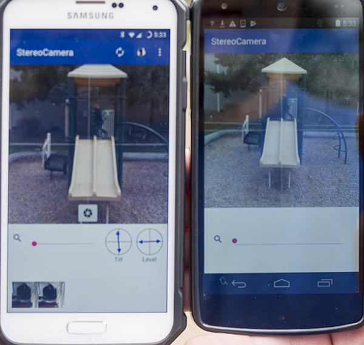
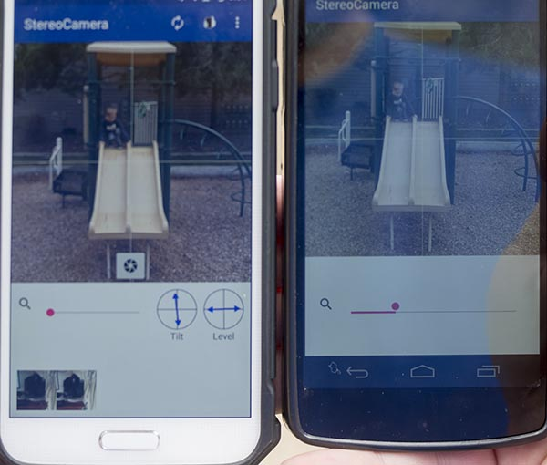
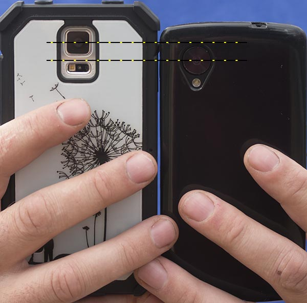
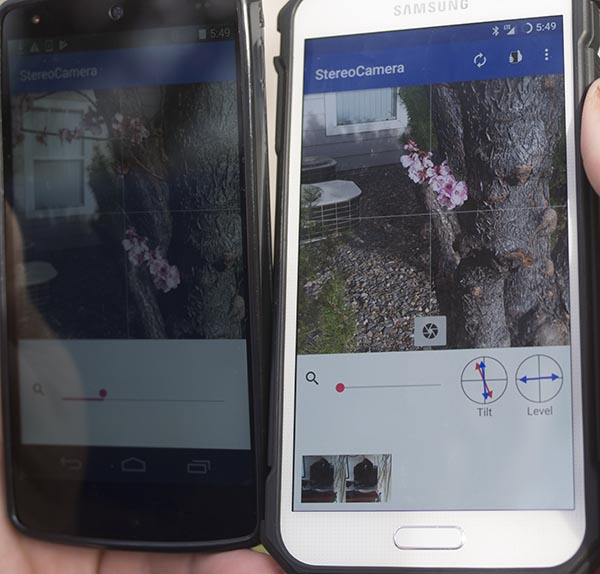
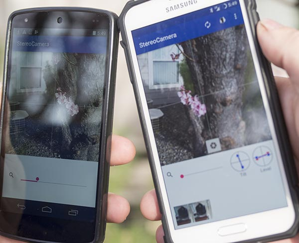
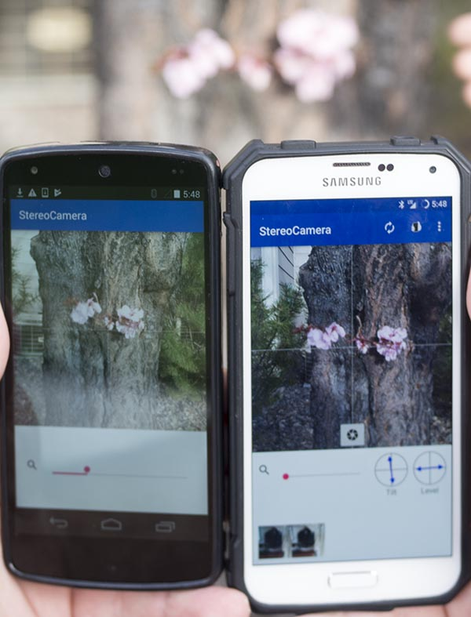

Alignment
Proper alignment is the hardest part of creating great 3d photos with this app.
Several tools have been included to make proper alignment as painless as possible. Some differences
can ruin the 3d effect entirely such as differences in device alignment and zoom. Other differences
such as focus, color, exposure, and even time don't adversely effect the final image.
Zoom
Unless you're shooting on identical devices, the cameras are likely to be different. Typically,
you have to adjust the digital zoom on one or the other devices to account for differing lens focal
lengths. The zoom slider on each device can be used to fine-tune their respective digital zoom settings.

Incorrect zoom. The device on the right is zoomed out further than the left one.

Correct zoom. Both images are framed by the roof on top and slide on the bottom.
Matching the framing one axis will also match it on the other. Swapping the camera from front to
back will use different zoom settings.
Camera relation
The cameras have to be held in a such a way to simulate human vision. The cameras have to be vertically
aligned with each other and have to be pointing in mostly the same direction. You brain usually can
account for subtle differences but the images will split if they're too different.

The cameras need the same vertical alignment. These two are at least a centimeter apart.

Make sure the devices have the same front-back tilt. The arrows on the tilt meter should match.

Make sure devices are aligned to the same horizon. The arrows on the level meter should match.

Make sure devices are pointed in the same direction. Pointing the devices inward results in
mismatched backgrounds and misaligned images.
Ghost overlay
The ghost overlay can be very helpful in getting the subject to match. Drawbacks are, it uses more
processing power, makes the app quite a bit more unstable, and can slow down the trigger since the
same channel is used to send trigger commands as to receive ghost image updates.
eg. correct alignment
Subject distance
If your subject is too close, your images aren't going to line up. Typically it will be cropped
on one side and the 3d will be lost. Attempts to turn the cameras inward to fix cropping will cause
a mismatched background and eyestrain. There are two ways to fix this that I know of: back off
(obviously) or get the cameras closer together.
Backing off usually results in fine 3d. You don't need to be close to your subject to get an
immersive 3d image. Moving the cameras closer together can also work. Turning the devices on their
side or overlapping the devices can serve to move the cameras closer together. Just remember to realign
them.
eg. too close crop
eg. backing off
eg. sideways cameras
eg. overlapping cameras